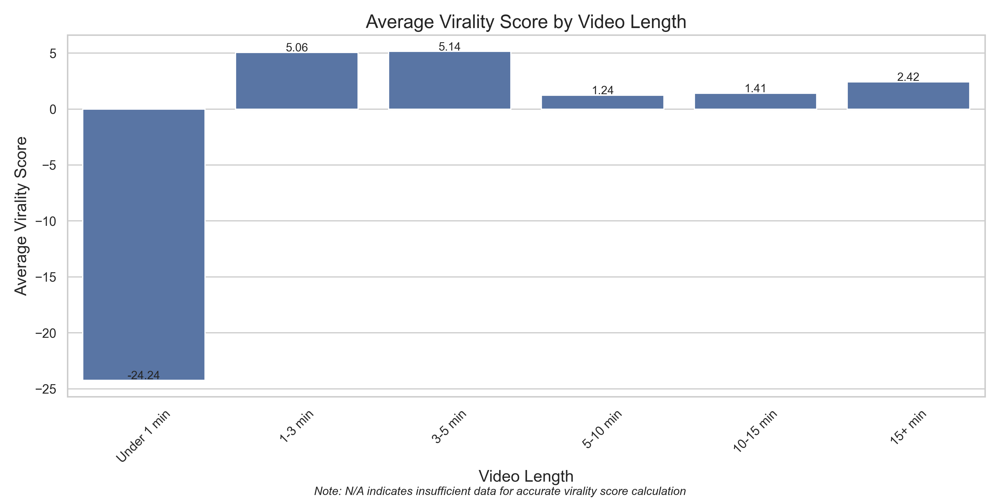
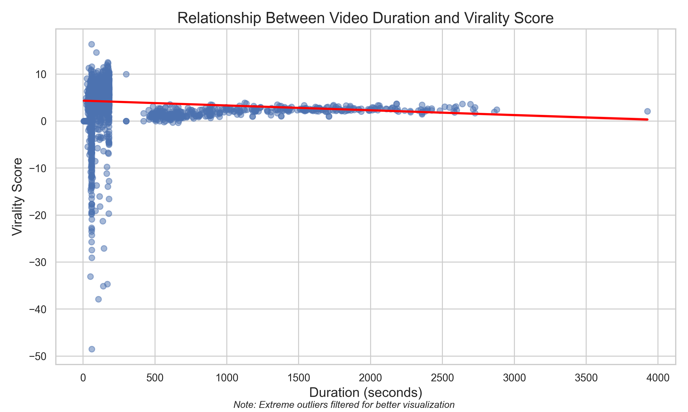

Generated on 2025-05-09 19:34:10
This report provides a comprehensive analysis of YouTube performance metrics across different accounts, video types, and time periods. Special attention is given to metrics that determine virality and the performance of Thumbsup Stories account.
The analysis covers 5825 videos across multiple YouTube accounts:
Time periods analyzed:
Video types:
Videos are categorized into 5 engaged view count buckets for analysis:
| Engaged View Bucket | Number of Videos | Percentage |
|---|---|---|
| Under 100K | 3984 | 68.40% |
| 100K to 500K | 1206 | 20.70% |
| 500K to 1M | 381 | 6.54% |
| 1M to 5M | 251 | 4.31% |
| 5M plus | 3 | 0.05% |
Analysis of how key performance metrics vary across different engaged view count buckets:
| Engaged View Bucket | Engaged views | Comments added | Likes | Watch time (hours) | Subscribers | Stayed to watch (%) | Average percentage viewed (%) | Comments to Engaged Views Ratio | Likes to Engaged Views Ratio | Subscribers Gained per 1000 Engaged Views | Comments to Likes Ratio | Engagement Rate | Swipe Away Ratio | Retention Efficiency | Completion Rate | Engaged Views per Impression | Watch Time per Engaged View (seconds) | Watch Time Efficiency | Virality Score | Growth Potential | Impressions click-through rate (%) |
|---|---|---|---|---|---|---|---|---|---|---|---|---|---|---|---|---|---|---|---|---|---|
| 5M plus | 6.58M | 5.08K | 480.55K | 100.44K | 4.80K | 78.99% | 91.15% | 0.08% | 7.27% | 99.42 | 0.70% | 1.10% | 7.35% | 21.01% | 91.15% | 0.0091 | 728.46 | 0.5467 | 5.99 | 0.5191 | 10.15% |
| 1M to 5M | 1.65M | 732.48 | 153.62K | 41.96K | 888.12 | 82.23% | 85.19% | 0.04% | 8.71% | 92.34 | 0.46% | 0.48% | 8.75% | 17.77% | 85.19% | 0.0085 | 1.17K | 0.8250 | 4.82 | 0.4879 | 10.21% |
| 500K to 1M | 698.50K | 318.86 | 68.84K | 17.58K | 288.60 | 83.02% | 85.61% | 0.04% | 8.99% | 91.25 | 0.36% | 0.46% | 9.03% | 16.98% | 85.61% | 0.0086 | 1.05K | 0.7985 | 4.33 | 0.4833 | 9.77% |
| 100K to 500K | 238.68K | 124.25 | 23.14K | 6.51K | 99.48 | 82.88% | 83.65% | 0.05% | 8.41% | 87.83 | 0.38% | 0.65% | 8.46% | 17.12% | 83.65% | 0.0084 | 715.27 | 0.8907 | 3.95 | 0.4645 | 8.17% |
| Under 100K | 19.77K | 19.19 | 1.69K | 773.94 | 12.70 | 74.95% | 75.06% | 0.10% | nan% | 72.97 | 0.57% | nan% | — | 25.05% | 75.06% | 0.0075 | — | 1.1330 | 3.55 | — | 6.00% |
Comparison of performance metrics between short-form and long-form content:
| Video Type | Time Period | Engaged views | Comments added | Likes | Watch time (hours) | Subscribers | Stayed to watch (%) | Average percentage viewed (%) | Comments to Engaged Views Ratio | Likes to Engaged Views Ratio | Subscribers Gained per 1000 Engaged Views | Comments to Likes Ratio | Engagement Rate | Swipe Away Ratio | Retention Efficiency | Completion Rate | Engaged Views per Impression | Watch Time per Engaged View (seconds) | Watch Time Efficiency | Virality Score | Growth Potential | Impressions click-through rate (%) |
|---|---|---|---|---|---|---|---|---|---|---|---|---|---|---|---|---|---|---|---|---|---|---|
| Long | April | 25.54K | 63.01 | 1.03K | 5.93K | 108.86 | 75.12% | 47.86% | 0.23% | 3.11% | 99.98 | 2.62% | nan% | 24.88% | 0.05% | 47.86% | — | — | 0.6092 | 4.11 | 0.5097 | 4.28% |
| Long | Jan-Mar | 19.61K | 25.52 | 610.83 | 2.67K | 65.05 | 72.67% | 51.15% | 0.12% | 2.71% | 100.00 | 1.93% | 4.33% | 27.33% | 0.08% | 51.15% | 0.1851 | 0.1851 | 0.3921 | 3.92 | 0.5084 | 5.06% |
| Shorts | Jan-Mar | 315.30K | 150.65 | 29.83K | 7.15K | 130.34 | 78.29% | 83.54% | 0.07% | nan% | 98.68 | 0.41% | 0.86% | 21.71% | 1.12% | 83.54% | — | — | 0.7441 | 4.71 | — | 6.52% |
| Shorts | April | 87.28K | 48.37 | 8.44K | 2.79K | 49.54 | 77.72% | 78.84% | 0.07% | nan% | 56.94 | 0.26% | nan% | 22.28% | 0.86% | 78.84% | — | — | 0.5183 | 4.26 | — | 7.80% |
Special focus on Thumbsup Stories account performance:
Number of Thumbsup Stories long videos in Jan-Mar: 0
As noted, there are no long-form videos for Thumbsup Stories in the Jan-Mar period, while April shows some long-form content but with relatively low performance.
Based on correlation analysis with engaged views (a better indicator of virality than passive impressions), we've identified which metrics have the strongest relationship with video virality:
Note: The correlation heatmap will be updated to remove the "Views" metric and only show metrics that exist in our dataset.
Below are definitions for all metrics used in this analysis, including both original YouTube metrics and calculated metrics:
| Metric | Definition |
|---|---|
| Content | Video ID from YouTube. Unique identifier for each video. |
| Account | YouTube channel name. The name of the channel that published the video. |
| Video Type | Format of the video (Shorts or Long). Shorts are vertical, short-form videos (≤60 seconds), while Long videos are traditional horizontal format. |
| Time Range | Time period when data was collected (Jan 1 - March 30 or April 1 - 30). Used to segment data for temporal analysis. |
| Video title | Title of the YouTube video. The headline displayed above the video. |
| Video publish time | Date when the video was published. The timestamp when the video was made public. |
| Duration | Length of the video in seconds. Total runtime of the video content. |
| Stayed to watch (%) | Percentage of viewers who did not immediately swipe away. Measures initial retention in the first few seconds. |
| Comments added | Total number of comments on the video. Count of user-generated text responses. |
| Likes | Total number of likes on the video. Count of positive reactions from viewers. |
| Average percentage viewed (%) | Average percentage of the video that viewers watched. Measures overall retention throughout the video. |
| Engaged views | Number of views with active engagement (likes, comments, shares). Key metric for measuring meaningful viewership. |
| Watch time (hours) | Total hours spent by all viewers watching the video. Cumulative viewing duration across all viewers. |
| Subscribers | Net subscribers gained from the video. New subscribers minus lost subscribers attributed to this video. |
| Average view duration | Average time viewers spent watching the video. Total watch time divided by number of engaged views. |
| Impressions | Number of times the video thumbnail was shown to potential viewers. Measures exposure in feeds, search, etc. |
| Impressions click-through rate (%) | Percentage of impressions that turned into engaged views. Formula: (Engaged views / Impressions) × 100 |
| Comments to Engaged Views Ratio | Percentage of engaged viewers who commented on the video. Formula: (Comments added / Engaged views) × 100. Measures audience interaction propensity. |
| Likes to Engaged Views Ratio | Percentage of engaged viewers who liked the video. Formula: (Likes / Engaged views) × 100. Measures positive sentiment and engagement rate. |
| Subscribers Gained per 1000 Engaged Views | Number of new subscribers gained per 1000 engaged views. Formula: (Subscribers / Engaged views) × 1000. Measures conversion efficiency. |
| Comments to Likes Ratio | Number of comments as a percentage of likes. Formula: (Comments added / Likes) × 100. Measures discussion generation relative to positive sentiment. |
| Engagement Rate | Combined rate of likes and comments relative to engaged views. Formula: ((Comments added + Likes) / Engaged views) × 100. Comprehensive engagement metric. |
| Swipe Away Ratio | Percentage of viewers who immediately swiped away. Formula: 100 - Stayed to watch (%). Measures initial rejection rate. |
| Retention Efficiency | How well the video retains viewers relative to its duration. Formula: Average percentage viewed (%) / Duration. Normalizes retention for videos of different lengths. |
| Completion Rate | Fraction of the video watched on average (0-1). Formula: Average percentage viewed (%) / 100. Simplified metric for retention analysis. |
| Engaged Views per Impression | Percentage of impressions that converted to engaged views. Formula: (Engaged views / Impressions) × 100. Measures thumbnail and title effectiveness for quality engagement. |
| Watch Time per Engaged View (seconds) | Average number of seconds watched per engaged view. Formula: (Watch time (hours) × 3600) / Engaged views. Detailed retention metric. |
| Watch Time Efficiency | Watch time relative to maximum possible watch time. Formula: (Watch time (hours) / Duration) × 3600. Measures how effectively content keeps viewers watching. |
| Virality Score | Weighted score combining key engagement metrics. Formula: (Likes × 0.6 + Comments added × 0.4) / Engaged views × 100. Custom metric to predict viral potential. |
| Growth Potential | Combined metric of subscriber growth and engagement. Formula: Subscribers Gained per 1000 Engaged Views × Engagement Rate. Predicts channel growth impact. |
| Engaged View Bucket | Category based on engaged view count. Videos grouped into: Under 100K, 100K to 500K, 500K to 1M, 1M to 5M, 5M plus. |
| Time Period | Simplified time period (Jan-Mar or April). Derived from Time Range for easier temporal comparison. |
This section examines how video length affects virality and engagement metrics, providing insights for content strategy optimization.
The chart below shows how virality score varies across different video length categories:
This scatter plot with regression line illustrates the correlation between video duration and virality score:
The heatmap below shows how video duration correlates with various engagement metrics:

This chart compares key engagement metrics across different video length categories: